The technique I use makes use of guides & false pins which will be deleted once animation is complete. Please work in sequence.
- First the coupling rods: this is straight forward & has been covered in the earlier tutorial: I'm making no further mention of them in this tutorial.
- The connecting rod is second.
- The crosshead: animating this is straight forward if your cylinder axis is horizontal. Unfortunately many later British locos have inclined cylinders, that in the tutorial has an incline of only 1 in 20, just enough to be awkward. This was done on the prototype to allow bigger cylinders to clear the station platforms! No program permits you to follow an incline directly; you just have to go along a bit, up a bit, along a bit, up a bit, ad infinitum. As the crosshead drives the union link we must make sure the animation here is spot-on otherwise we'll have to correct it & the link later. You can't, using this method, draw the cylinders horizontal & incline them after animating - tried that, doesn't work.
- Next the first fixed item - the expansion link & the return crank.
- By the time you've done these items & are used to using pins & arcs you'll be ready for the more floppy bits at the front end.
We'll start with the connecting rod
Mp>We'll start with the connecting rod, with a rotary motion at the wheel & a reciprocating motion at the crosshead which we want to move in a straight line along the piston rod. I've described the use of pins before - use a 12 sided cylinder for the smaller pins, clone a dozen or so & store them for future use. The first two are used for the crankpin & big-end, set them at the crankpin position, they could be moved laterally keeping them well clear of the wheel & rod so that they'll be easy to detach later. Attach one of them to the wheel. Make sure the con-rod is in the correct place. Click on the other pin & write down its exact position. Attach the pin to the con-rod - click on the rod first then attach the pin, not the other way round. In this case it won't make any difference - just renaming but it's better to be logical.
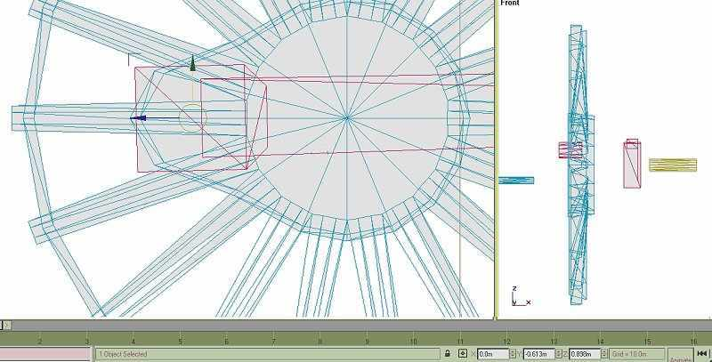
The pivot point for the rod must be moved to be at the crankpin position:- 0, 0.613, 0.898 as we noted. Make the rod active. Click the 'hierarchy' menu; 'affect pivot only' then the 'move' button. Write in the values in the windows, the pivot should move.
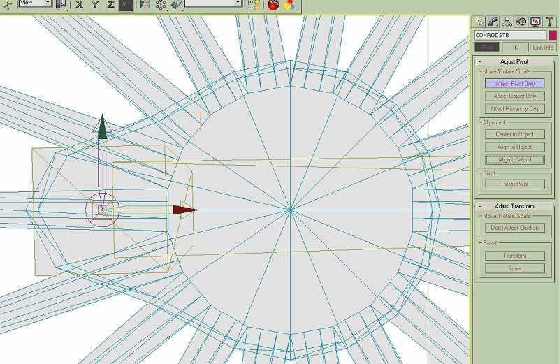
Take one of your cloned pins, take it to the piston rod & scale it to the same diameter. Move it to the end of the con-rod & attach it. Check the length of the con-rod if you have a accurate measurement. If you need to make any adjustments go into 'point' mode.
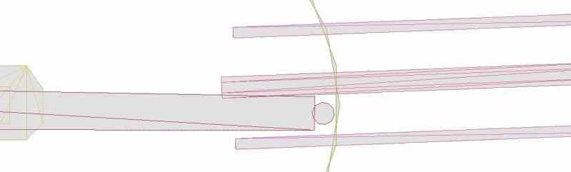
Now we want to rotate the rod so that the small end covers the piston rod. Moving with the mouse is far too crude, the difference in angle is very small. We need to use the window to write in new values. In this grab the value is -8.9, 0, 0. In Gmax rotation is possible to 1/1000 of a degree, movement to 1mm full size; we won't need this degree of accuracy though it's good to know it's there. TSM is not quite as exact, you'll need to be working in the 'transform', 'rotate' menu.
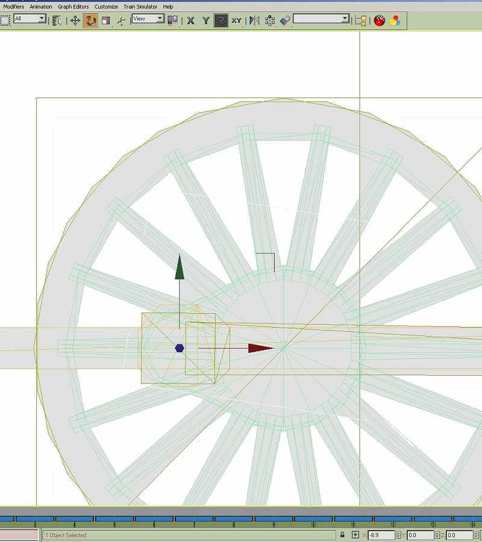
The rod will be close to, but not over the piston rod.
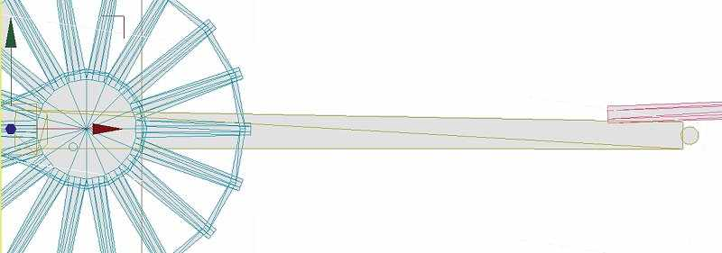
Using the values in the 'x' window rotate the rod. Notice that in ALL of the valve gear animation only the 'x' value will be affected, if the other values have changed zero them otherwise they'll twist. If the values show other than '0' you need to change the pivot with 'Align to World'.
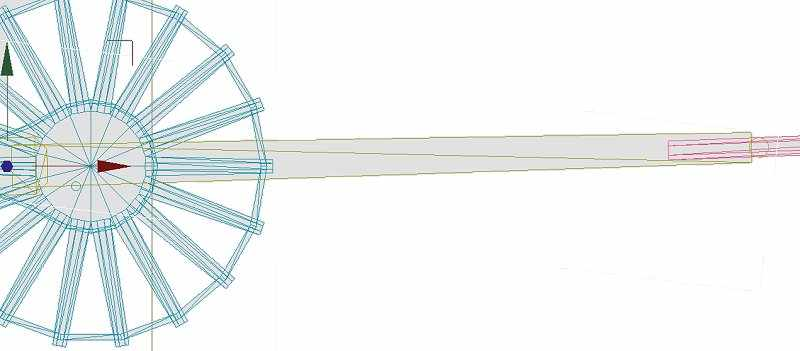
Enlarge the view as much as possible. You can't go in this close in TSM.
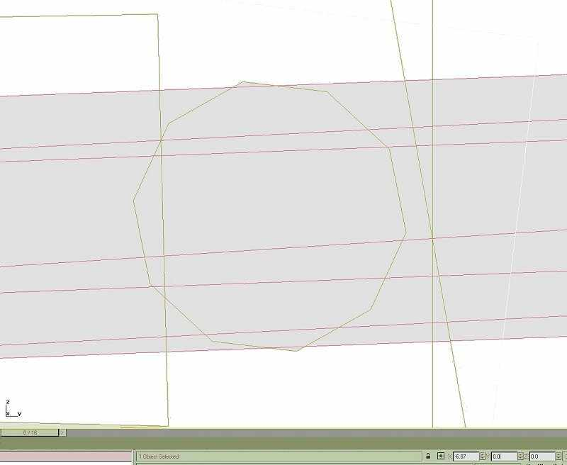
This is as close as you can get in TSM, certainly close enough. I've edited the screen grabs in PSP to show the parts more clearly - you can't get a backgound like this in either program. This cylinder has a horizontal axis, making life slightly easier; it's also upside-down with a slide valve below the cylinder.
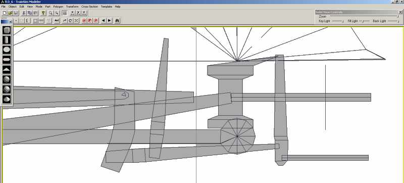
Once the rod is aligned we're ready to animate. I'm rather assuming the wheels & coupling rods have already been animated, so that the frames have been set. Obviously the first thing to do is to fix the rod to the wheel; this is just repetition. Zoom in close to the wheel hub. Press the 'Animation' button. Make the rod active, 'move' then advance the animation one frame. Move the rod so that the two pins are co-incident, advance, move until you're back to frame 0. The rod should move with the wheel. It might help to set the animation rate to 1/2 or 1/4. Untick the 'Active Viewpoint Only' box, this will show the animation in all screen views.
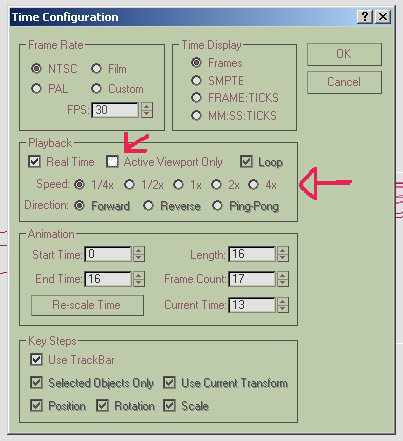
Go into 'rotate' mode, track to the small end & rotate the rod to cover the piston rod frame by frame. Bring the crosshead & slide bars into the scene. Take another of the cloned pins, make it the same size & position of the small end, bring the crosshead into position & attach the pin. Again it's just a case of animating the cross head, this time only using 'move'. The example here has the cylinders inclined slightly, movement will be a combination of along & up, we want the pin to coincide with the pin on the con-rod. When the cross head is animated you could hide the piston rod to avoid confusing lines on the screen; just attach it later, you won't have to animate it. As a belt & braces precaution you could also, in point mode, have the crosshead just touch the guides - depends on the prototype.
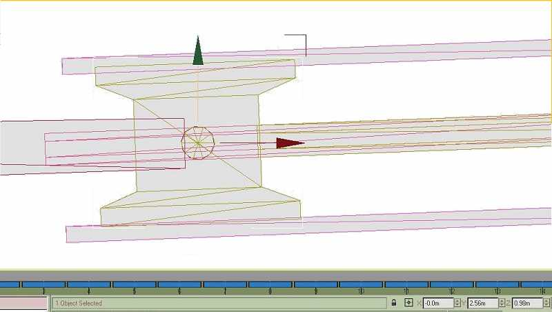
Animating the Valve Gear
Now the fun starts; it's time to animate the valve gear. Spend a bit more time with the valve gear program. Walschaerts' gear has two distinct inputs, from the eccentric & from the crosshead. Inside Walschaerts' isn't common, the Great Western Castles & Kings used it; the geometry is exactly the same as outside gear.
The eccentric end is easy to understand, the return crank (eccentric) imparts movement to the return crank rod (eccentric rod) which causes the expansion link to rock about its fixed pivot. The movement of the link is constant & can be easily animated. We'll need more of our pins & a cylinder to aid plotting. Warning - a few mathematics terms from now on. I'll be repeating myself a bit.
Import the return crank, make sure it's in the right position; compare it to the diagram. Notice that the return crank trails the crankpin by 90 degrees. Attach the crank to the driven wheel.
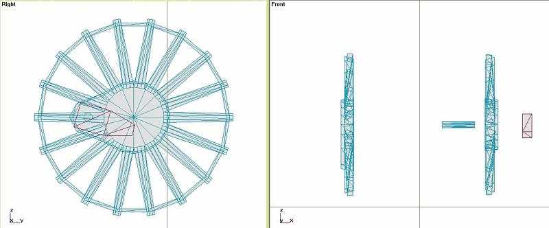
Place a pin at the pivot position, clone it, write position & attach it to the wheel. Keep it away from the wheel in order to detach it later.
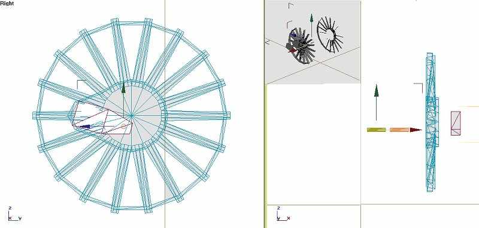
Import the return crank rod, if it's in the right place just attach the other pin, set the pivot position to the value you're just noted. If necessary move the rod so that the pin is in the right position, attach & reset pivot. You could, of course, attach the pin to the rod then bring that to the crank; whichever is easiest.
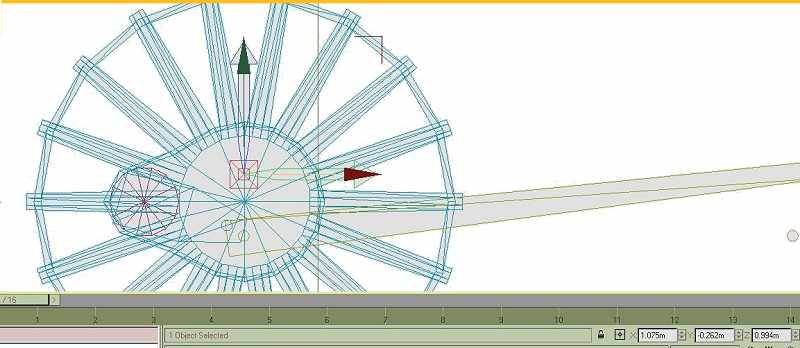
Fix the wheel end of the rod first, press 'Animate', 'move' then frame-by-frame move the rod to follow the pin on the crank.
To convert the movement at the link end we need a guide. This isn't a straight line like the piston rod but will be a curved line. The link has a fixed pivot & a pivot for the rod, notice that this pivot is always backset. Fix the pivot for the link. I might be stating the obvious here, certainly repeating myself but rather too much information than too little.
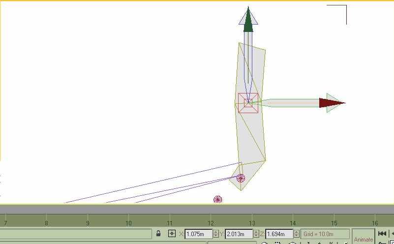
We need a cylinder centred on the link pivot, the radius will intersect the second pivot. Draw a cylinder, I've used 60 sides here. If I remember TSM will only draw 32 sides; you could, however, rotate points in the area you want to see in order to make the circle less lumpy. The polygon count doesn't matter, none of these guides will be used on the final model. Position the cylinder at the link pivot.
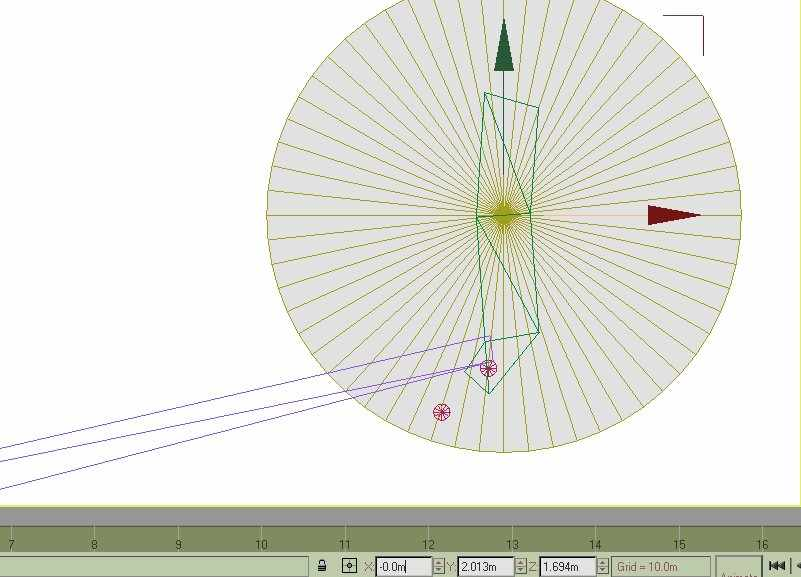
Use the window on the right to alter the radius until the arc intersects the pivot. Hide the link until the rod is animated.
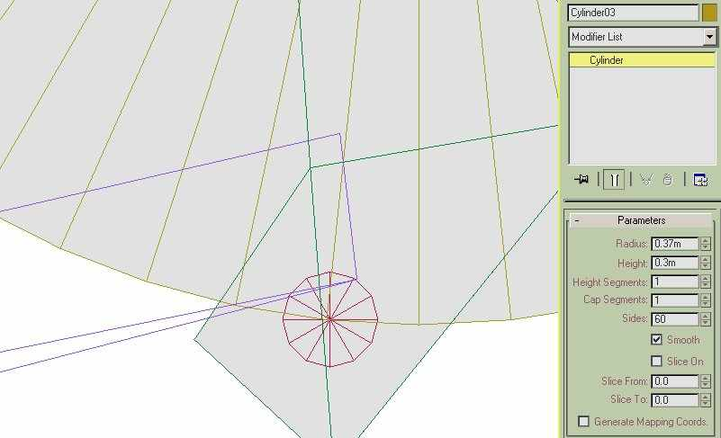
Give the cylinder a sensible name. I only want to see an arc so convert to editable mesh & delete all the face polygons. Only the arc is visible, in solid view it won't be seen.
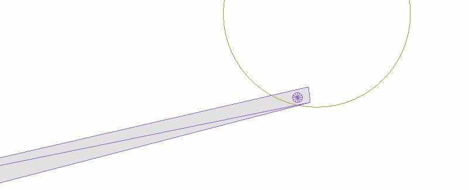
Hopefully you're anticipating the next step. Rotate the rod until the pin centres on the arc, 'animate' then rotate each frame. When the animation is played the pin should describe an arc.
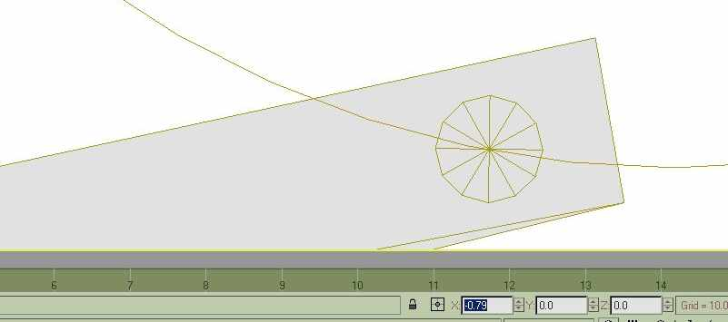
Unhide the link, rotate it so that the pins are co-incident. 'Animate', 'rotate' & follow the rod. The eccentric end is done.
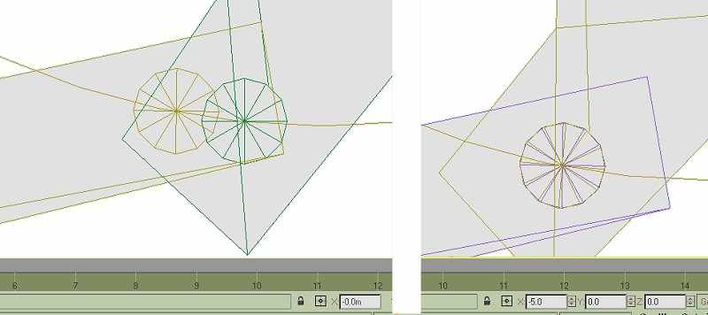
The crosshead end is more of a problem. This is an area where a better understanding of Gmax bones would be useful, we'll use the TSM method which is a bit hit & miss reducing errors rather than sticking to applied maths. The result is as good as your patience.
Import your union link & combination lever, place pins at the appropriate pivot points. Pivot the combination lever at the valve line. Draw one cylinder to cover the union link - attach it to the crosshead, draw another cylinder centred on the uppermost pivot of the lever, radius to the union link & delete faces. This isn't strictly necessary but there will be fewer confusing lines on the screen.
This will give us the 2 loci we need for the first draft. We'll be reducing errors, going through the process a couple of times. With practice you'll be able to skip this first rough draft. Animate the union link first, covering the intersection of the loci.
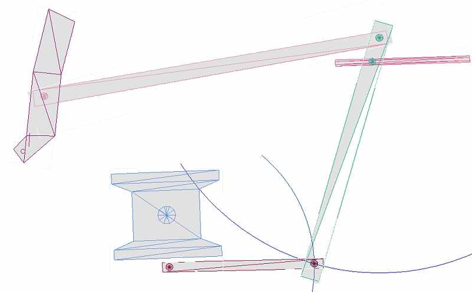
Look again at the animated program & the diagram at the head of this tutorial. In the diagram the radius is at mid-gear - neither forward nor reverse - and will not impart any movement to the combination lever. The valve won't open sufficient to open the steam ports in the cylinder. It would be splendid if the lifting link could raise or lower the radius rod to affect the cut-off but it's just another thing that won't happen in MSTS. How many model railway locos have you seen which move the gear before reversing? I've never seen one. It could happen - I remember seeing an article describing such an action in an 0 gauge loco - another motor & loads of diodes!!
It would probably be acceptable to run our animation in mid-gear, in which case we only have to correct the arc in the combination lever movement. If we want to take our animation a stage further we'll put the loco into forward gear. Locos only ever use full gear for starting - it's like 1st gear in a car. Most of the time a loco will be working at about 30% cut-off. The movement of the radius rod will be visible & will influence the action of the combination lever.
Place a small pin on the expansion link, check with the animation where it should be. Close the pin before attaching it to place on the radius rod. Import the radius rod, a pin over the combination lever pin, move the pivot to the link end. Animate the radius rod, first with 'move' at the link end then 'rotate' to bring it close to the combination lever; don't be too exact.
What we might have to do now is to make sure the valve will move in a straight line. In some cases it won't be necessary, BR Standards for instance have a valve guide which is so big it hides the valve rod; the top of the combination lever is hardly visible.
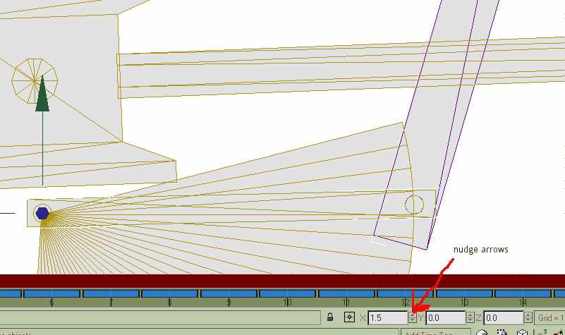
This part is all trial & error, reducing errors. 'Move' & 'rotate' the lever, the rod & link will just be nudged with 'rotate'- this is where the arrows are most useful. It's made easy in this case because the movements at the valve end are quite small. Success at this stage depends on three related movements. The combination lever must align the three pins - put the pivot over the union link pin, rotate until the top pin is as close as possible to the radius rod pin. If you're in luck the valve pin will cover the valve rod. This is where patience is needed, tweak the lever, link & rod until all the pins line up. You'll find it's quite quick - big error - small error - smaller error until the action is smooth. You'll need to move & rotate the lever, just rotate the link & rod. These adjustments will be small - in the tenths of degrees. Gmax alows you to nudge the rotation with the arrows next to the window. Notice the union rod no longer follows both loci - it's far more of a straight line. If you're going wrong undo a step or two. Once you're happy with the animation attach the piston rod to the crosshead; the valve rod will have to be animated, do this before you detach the pin.
Console yourself with the thought that it's far better than watching 'Big Brother'. The left side will be far quicker with experience. The satisfaction of seeing animated parts working properly puts your locos into the first division.
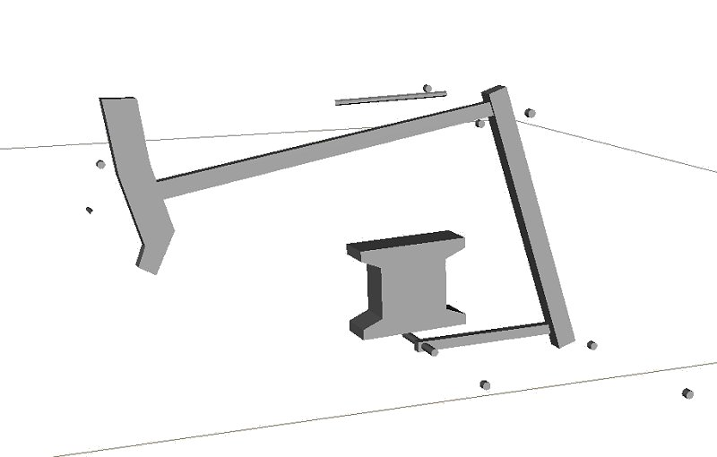
Detach the guides & arcs we used - they'll come in useful for the port side. If you haven't quartered the wheels you could mirror every part on the stb side to the port. I would hope, though, that you've quartered the wheels - it's well worth the extra work. In this case don't be tempted to mirror the parts - they'll be 90 degrees out of sync. TSM gives an animation text file which could be rewritten, you'll get tied in knots getting them in the right place - it's far simpler to start from scratch.
I've added more detail to the union link. Modify your part IN POINT MODE - come out of point mode. Draw the details needed (clone the parts & send them to the other side; progress the frames until they coincide & attach them at that frame) & attach them, make doubly sure you add them to the link & not vise-versa. This way you won't change the pivot or lose the animation.
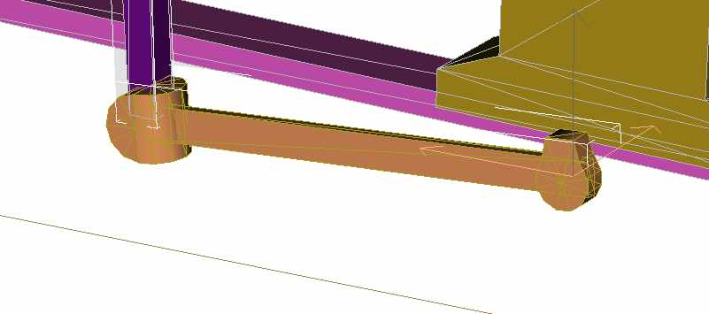
You can also use primitives, cylinders & boxes, as an aid in modelling the rest of the loco - in this screenie I'm using a circle to even out the front of a footplate, the circle is hidden or deleted afterwards.
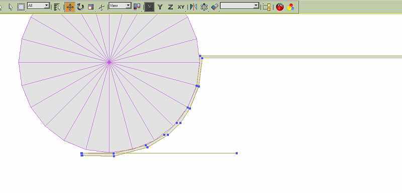
You could animate the port side as a separate project, importing parts from the original model as well as the arcs & guides from the stb de model.